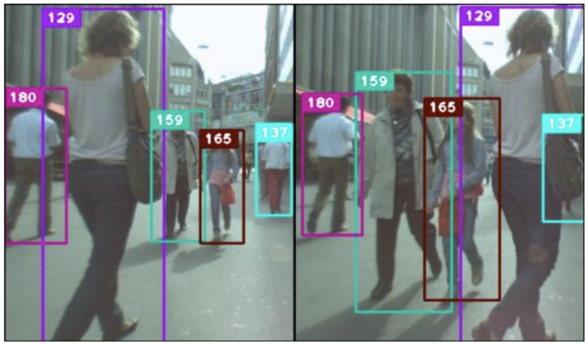
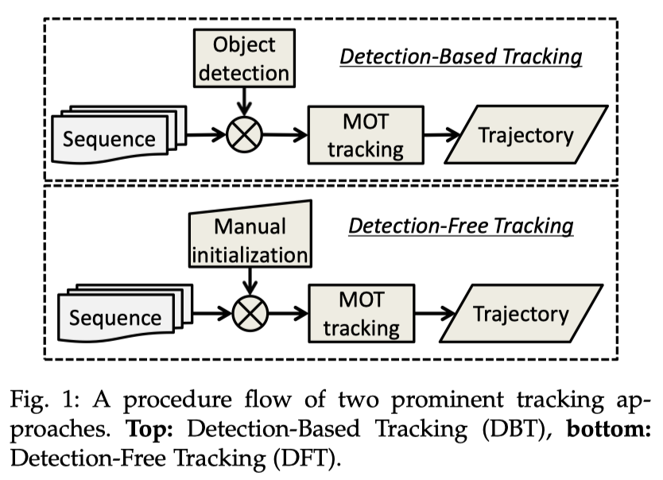
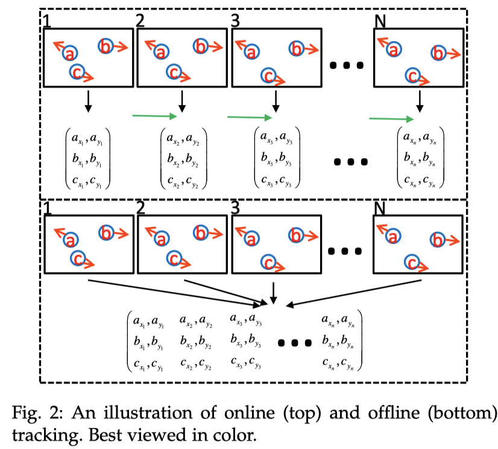
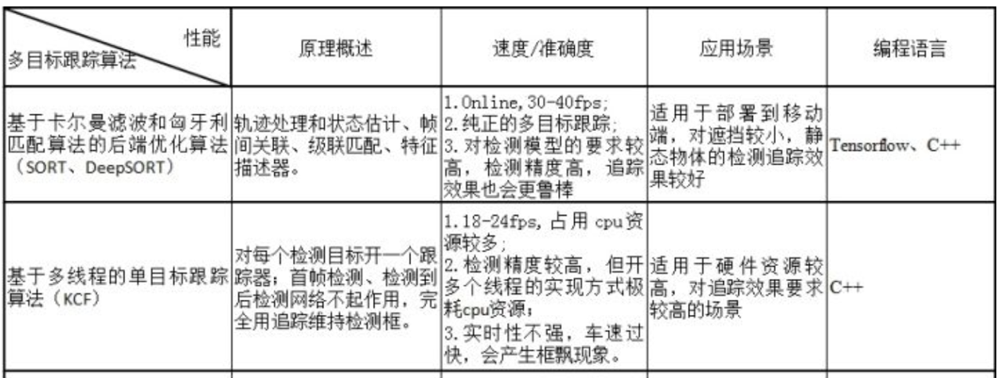
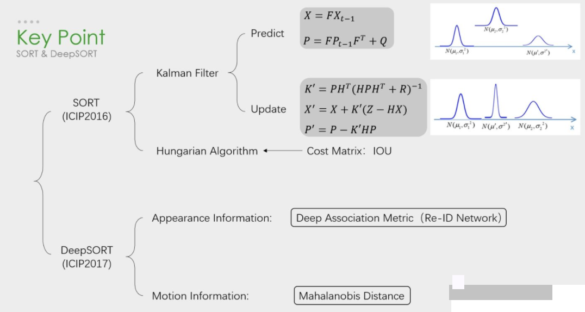

3.1. 多目标追踪
学习目标：
- 了解多目标跟踪的常见的分类方法
- 了解在多目标跟踪中常用的运动模型
- 知道多目标跟踪的常用算法
1.多目标跟踪分类
多目标跟踪，即MOT（Multi-Object Tracking），也就是在一段视频中同时跟踪多个目标。MOT主要应用在安防监控和自动驾驶等领域中。

多目标跟踪可看做多变量估计问题，即给定一个图像序列，表示第 t 帧第 i 个目标的状态，表示第 t 帧所有目标的状态序列，表示第 i 个目标的状态序列，其中和分别表示目标 i 出现的第一帧和最后一帧，表示所有目标从第一帧到第t帧的状态序列。这里的状态可以理解为目标对应图像中哪个位置，或者是否存在于此图像中，通过匹配得到对应的观测目标：。
1.1 初始化方法
多目标跟踪问题中并不是所有目标都会在第一帧出现，也并不是所有目标都会出现在每一帧。那如何对出现的目标进行初始化，可以作为跟踪算法的分类表针。常见的初始化方法分为两大类，一个是Detection-Based-Tracking(DBT),一个是Detection-Free-Tracking(DFT)。下图比较形象地说明了两类算法的区别。

DBT
DBT的方式就是典型的tracking-by-detection模式，即先检测目标，然后将目标关联进入跟踪轨迹中。那么就存在两个问题，第一，该跟踪方式非常依赖目标检测器的性能，第二，目标检测的实质是分类和回归，即该跟踪方式只能针对特定的目标类型，如：行人、车辆、动物。DBT则是目前业界研究的主流。
DFT
DFT是单目标跟踪领域的常用初始化方法，即每当新目标出现时，人为告诉算法新目标的位置，这样做的好处是target free，坏处就是过程比较麻烦，存在过多的交互，所以DBT相对来说更受欢迎。
1.2 处理模式
MOT也存在着不同的处理模式，Online和Offline两大类，其主要区别在于是否用到了后续帧的信息。下图形象解释了Online与Offline跟踪的区别。

Online Tracking
Online Tracking是对视频帧逐帧进行处理，当前帧的跟踪仅利用过去的信息。
Offline Tracking
不同于Online Tracking，Offline Tracking会利用前后视频帧的信息对当前帧进行目标跟踪，这种方式只适用于视频，如果应用于摄像头，则会有滞后效应，通常采用时间窗方式进行处理，以节省内存和加速。
2.运动模型
为了简化多目标跟踪的难度，我们引入运动模型类简化求解过程，运动模型捕捉目标的动态行为，它估计目标在未来帧中的潜在位置，从而减少搜索空间。在大多数情况下，假设目标在现实中是平缓运动的，那么在图像空间也是如此。对于车辆的运动，大致可分为线性和非线性两种运动：
- 线性运动：线性运动模型是目前最主流的模型，即假设目标的运动属性平稳（速度，加速度，位置）；
- 非线性运动：虽然线性运动模型比较常用，但由于存在它解决不了的问题，非线性运动模型随之诞生。它可以使tracklets间运动相似度计算得更加准确。
3.跟踪方法
多目标跟踪中基于神经网络的算法，端到端的算法并不多，主要还在实验室的刷榜阶段，模型复杂，速度慢，追踪结果也不好，我们就不再介绍，主要给大家介绍以下两种主流的算法：

3.1 基于Kalman和KM算法的后端优化算法
该类算法能达到实时性，但依赖于检测算法效果要好，特征区分要好（输出最终结果的好坏依赖于较强的检测算法，而基于卡尔曼加匈牙利匹配的追踪算法作用在于能够输出检测目标的id，其次能保证追踪算法的实时性），这样追踪效果会好，id切换少。代表性的算法是SORT/DeepSORT。

SORT 是一种实用的多目标跟踪算法，引入了线性速度模型与卡尔曼滤波来进行位置预测，在无合适匹配检测框的情况下，使用运动模型来预测物体的位置。匈牙利算法是一种寻找二分图的最大匹配的算法，在多目标跟踪问题中可以简单理解为寻找前后两帧的若干目标的匹配最优解的一种算法。而卡尔曼滤波可以看作是一种运动模型，用来对目标的轨迹进行预测，并且使用确信度较高的跟踪结果进行预测结果的修正。
多目标追踪一般接在目标检测后。在工业界目标检测采用比较多的是yolo检测网络，单阶段式，速度快，精度不差，部署在NV的平台帧率可以达到30fps以上。所以要实现目标检测代码和多目标追踪代码集成的任务，需要先将两者的框架统一。先实现目标检测网络，检测的输出结果主要是将检测框的位置信息输入到多目标追踪算法中。
3.2 基于多线程的单目标跟踪的多目标跟踪算法
这类算法特点是跟踪效果会很好，因为其为每一类物体都单独分配了一个跟踪器。但该算法对目标尺度变化要求较大，参数调试需要合理，同时该算法极耗cpu资源，实时性不高，代表算法是利用KCF进行目标跟踪。
多目标追踪本质上是多个目标同时运动的问题，所以有提出将单目标跟踪器引入到多目标追踪的问题，为每一个目标分配一个跟踪器，然后间接地使用匹配算法来修正那些跟踪失败或新出现的目标。代表性的单目标跟踪算法为核相关滤波算法（KCF）,在精度和速度上能够同时达到很高的水平，是当时单目标跟踪最优秀的算法之一，后来的很多单目标跟踪算法都是基于此做的改进。
实际应用过程中会为每个目标分配一个KCF跟踪器并采用多线程的方式来组织这些跟踪器。同时因为实际硬件条件的限制，不可能提供强大的计算力资源，会采用检测器与跟踪器交替进行的跟踪策略。由于检测的帧率不高，使得跟踪的维持效果出现滞后或框飘的现象较为严重，实用性不大。
总结：
1.多目标跟踪，即MOT（Multi-Object Tracking），在一段视频中同时跟踪多个目标
基于初始化方法：
- DBT：基于检测的目标跟踪方法
- DFT：每当新目标出现时，人为告诉算法新目标的位置
基于处理模型的方法：
- 离线处理：利用前后视频帧的信息对当前帧进行目标跟踪
- 在线处理：对视频帧逐帧进行处理，当前帧的跟踪仅利用过去的信息
运动模型
线性运动（常用）和非线性运动
常用算法：
基于Kalman和KM算法的后端优化算法
和基于多线程的单目标跟踪的多目标跟踪算法